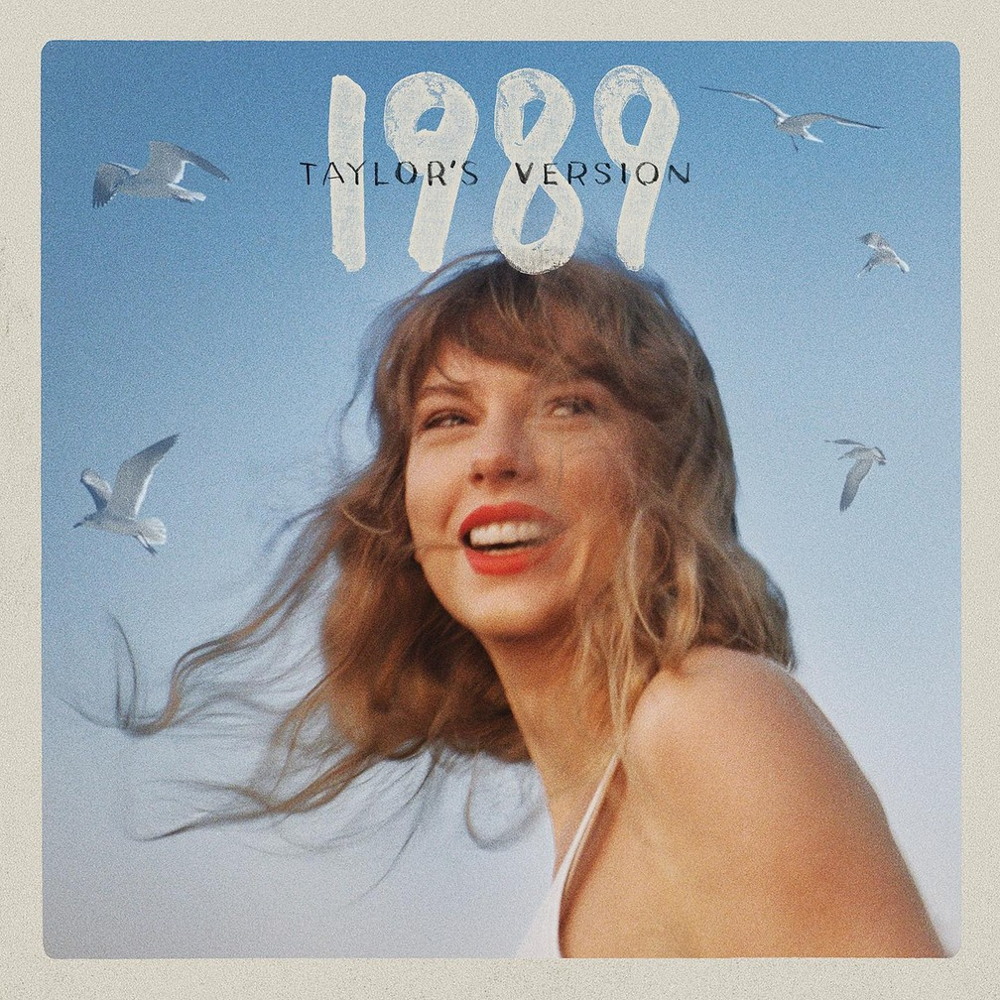
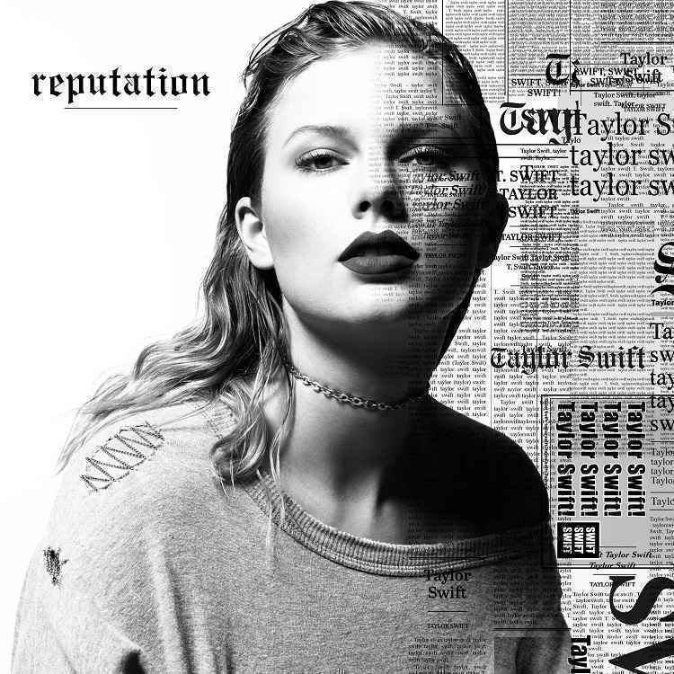
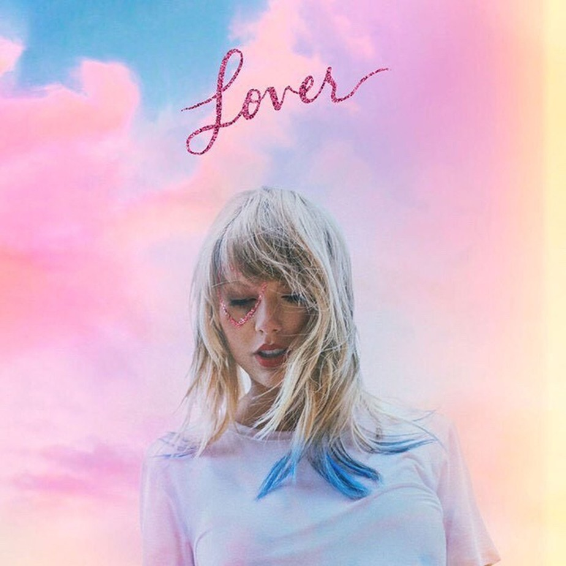

DEBUT O álbum de estreia autointitulado de Taylor Swift foi lançado no dia 24 de outubro de 2006. Produzido pelo, na época novato, Nathan Chapman, e com co-composições de Robert Ellis Orrall, Angelo Petraglia, Brian Dean Maher e Liz Rose, suas músicas descrevem experiências vivenciadas durante a entrada de Taylor na adolescência, como a primeira paixão, a insegurança e a angústia de alguém de sua faixa etária. A própria Taylor o descreveu como “o diário do início da [sua] adolescência”. A maioria das faixas foram escritas enquanto a cantora cursava o primeiro ano do ensino médio na escola.
FEARLEES
O segundo álbum de Taylor Swift, “Fearless”, foi lançado no dia 11 de novembro de 2008. Produzido por Nathan Chapman, Scott Borchetta e pela própria Taylor, também conta com co-composições de Liz Rose, Hillary Lindsey, John Rich e Colbie Caillat. “É o mesmo tipo de álbum que eu fiz em 2006, apenas dois anos mais velho. Em termos sonoros, é o tipo de música que eu gosto de escrever, country, mas eu acho que tendo em conta o assunto principal e algumas melodias que eu gosto de usar, as faixas têm apelo crossover”, descreveu Taylor. “Fearless” ficou marcado por levar a fama de Taylor ao mundo com seus primeiros hits internacionais, “Love Story” e “You Belong With Me”, além de se tornar o álbum country mais premiado da história, também rendendo à ela quatro GRAMMYs, incluindo na categoria mais prestigiada da premiação, a de Álbum do Ano, a consagrando como artista mais jovem da história a vencer tal prêmio.
SPEAK NOW
“Speak Now”, terceiro álbum de Taylor Swift, foi lançado em 25 de outubro de 2010. O álbum foi anteriormente anunciado em 20 de julho através de um stream online. Todas as faixas foram compostas unicamente por Taylor e produzidas por ela e Nathan Chapman. Sobre o álbum, Taylor disse durante seu lançamento: “Cada canção é como um roteiro sobre o que essa relação representava, com pequenos marcadores que talvez nem todo mundo vai saber, mas há coisas que eram pequenos detalhes do relacionamento, pequenas dicas”. Em outro momento, Taylor explicou que o álbum se chamaria “Enchanted”, mas depois de uma conversa com o presidente de sua gravadora, Scott Borchetta, eles decidiram alterar o nome do disco porque não se tratava de um álbum de contos de fadas ou sobre seu ensino médio como os anteriores. Foi o primeiro álbum de Taylor a atingir a avassaladora marca de mais de um milhão de cópias vendidas durante a semana de lançamento.
RED
Lançado mundialmente em 22 de outubro de 2012, “Red” é o quarto álbum de estúdio de Taylor. Criado como um disco de experimentações, a própria cantora o descreve como uma “colcha de retalhos” na qual ela pôde trabalhar com colaboradores diferentes dos quais costumava, como Max Martin e Shellback. Segundo Taylor, compor a faixa-título foi primordial ao projeto, pois a fez descartar tudo o que tinha feito até então e recomeçar as gravações do zero. Ela diz que resolveu dar este nome ao álbum porque “quando você se apaixona, tudo acontece tão rápido e fica fora de controle e há um monte de sentimentos que se misturam, como paixão, alegria, ciúmes, frustração, falta de comunicação e várias outras emoções que, em sua mente, são todas da cor vermelha”. O carro-chefe do álbum, “We Are Never Ever Getting Back Together”, e o terceiro single, “I Knew You Were Trouble”, tornaram-se grandes sucessos da música pop e foram também as primeiras faixas de Taylor a figurarem o topo da Hot 100, maior parada musical do mundo. “Red” foi o segundo disco de Taylor a ser indicado à Álbum do Ano

1989
Se no seu antecessor, o “Red”, Taylor havia apenas experimentado trabalhar com o hitmaker Max Martin em apenas 3 faixas, desta vez ela resolveu colocá-lo à frente do que viria a ser o “1989”, o tendo como companheiro na produção executiva do disco que foi descrito por Taylor como seu “primeiro álbum oficialmente pop”.
“1989” apresenta o notável afastamento dos trabalhos anteriores da cantora, trocando as influências country por synthpop, pop alternativo e o bubblegum pop. Taylor descreve o álbum como o seu “renascimento”, por isso resolveu chamá-lo de ‘’1989’’, pois foi o ano que nasceu e também pela influência do pop do final dos anos 80 em boa parte do disco. Liricamente, Taylor manteve a qualidade dos trabalhos anteriores, porém mostrando amadurecimento ao escrever sobre uma nova fase de sua vida, cantando sobre temas como autodescoberta, liberdade, o assédio da mídia e, é claro, amor. Mas diferente dos trabalhos anteriores, neste álbum o tema amor foi abordado com uma nova visão mais realista.
“1989” foi o terceiro disco de Taylor a vender mais de 1 milhão de cópias em sua semana de lançamento, a consagrando como única artista da história a conseguir este feito com 3 álbuns.

REPUTATION
3 anos depois do sucesso estrondoso do “1989”, que culminou com o Grammy de álbum do ano, Taylor Swift voltou ao cenário musical com “reputation”. A volta de Taylor ocorreu depois de um ano conturbado em que ela terminou o relacionamento com Calvin Harris, viajou o mundo ao lado de Tom Hiddleston, fez as pazes e viu Kanye West ser o foco de mais um capítulo desgastante em sua vida.
Como um desabafo, a era “reputation” começou matando a “antiga Taylor” e clamando uma reinvenção: todas as redes sociais de Taylor tiveram um recomeço e cortou, quase que por completo, as relações com a imprensa. Mas o “reputation” não é feito só de lamentações: composições celebram o amor e acolhimento recebido nos tempos “dificeis”.
O álbum foi recebido com críticas mistas e não repetiu o sucesso arrebatador do seu antecedente. No entanto, a turnê foi um grande marco para a carreira de Taylor com shows realizados apenas em estádios, sendo finalizada com um especial feito para o Netflix.

LOVER
Descrito por Taylor Swift como “uma carta romântica para o amor”,” Lover” é o sétimo álbum da carreira de Taylor e seu primeiro {álbum} com a gravadora “Republic Records”. Lançado em 23 de agosto de 2019, “Lover” tem Taylor como produtora executiva e contou com Jack Antonoff, Joel Little, Louis Bell, Frank Dukes, e Sounwave.
Além disso, o álbum de tons pasteis e músicas mais animadas do que as de eras anteriores, apresenta colaborações com Brendon Urie (de Panic! at the Disco) na faixa ‘ME!’ e Dixie Chicks na faixa “Soon you’ll get better”. A estreia de “Lover” foi antecedida pelo lançamento dos singles ‘ME!’,”You Need To Calm Down” e a faixa que intitula o álbum, todos os quais alcançaram o top 10 do ‘Billboard Hot 100’.
Suas vendas chegaram a 3 milhões na primeira semana de comercialização. Dentre todas as críticas, um ponto recorrentemente mencionado foi a maturidade e honestidade presente na composição do sétimo álbum.
FOLKLORE
Folklore, oitavo álbum de estúdio de Taylor Swift, se consagrou como a melhor produção de 2020 e levou o prêmio de álbum do ano no Grammy, desbancando fortes concorrentes como “Future Nostalgia” da queridinha do momento Dua Lipa e “Hollywood’s Bleeding”, de Post Malone.
A obra nostálgica, intimista e folk da cantora foi feita durante o período de quarentena, chamando a atenção por sua qualidade musical e pela total reinvenção de sua criadora, que apostou ao lado do produtor Jack Antonoff em algo completamente diferente do que vinha fazendo há anos.
Ao discorrer sobre seu novo projeto, a loirinha contou que o imaginário das letras do álbum e todo o universo melancólico e místico de sua produção continham contos sobre amor escondidos, em que ela encarnou personagens ao escrever suas composições durante o período de isolamento devido a pandemia de Covid-19.
“Me refiro a elas como ‘O Triângulo do Amor Adolescente’. Elas exploram um triângulo amoroso do ponto de vista das três pessoas em momentos distintos de suas vidas.”,revelou Taylor em um comentário no Youtube quando Folklore foi lançado oficialmente.
EVERMORE
Evermore (estilizado em letras minúsculas) é o nono álbum de estúdio da cantora e compositora estadunidense Taylor Swift. O seu lançamento ocorreu em 11 de dezembro de 2020, Evermore foi um projeto espontâneo da extensa colaboração de Swift com seu colaborador do Folklore, Aaron Dessner, gravado principalmente em seu estúdio Long Pond no Hudson Valley.
Evermore combina rock alternativo, indie folk e pop barroco, carregados por dedilhado de guitarras, pianos sombrios, cordas luxuosas e percussão esparsa. A narrativa impressionista e a mitopoeia dominam sua técnica lírica. O assunto foi descrito como uma antologia de histórias sobre amor, casamento, infidelidade e luto, explorando as complexidades da emoção humana. As bandas norte-americanas Bon Iver, Haim e the National aparecem como artistas convidados no álbum.
 MIDNIGHT
Midnights é o décimo álbum de estúdio da cantora e compositora estadunidense Taylor Swift, lançado em 21 de outubro de 2022 através da Republic Records. O álbum foi anunciado durante o MTV Video Music Awards de 2022, marcando o primeiro lançamento inédito de Swift após seus álbuns de folk alternativo Folklore e Evermore (2020), e as duas primeiras regravações dos álbuns Fearless (Taylor's Version) e Red (Taylor's Version) (2021). Midnights é um álbum conceitual que explora reflexões noturnas inspirada pelas "noites de insônia" de Swift e aborda temas como ansiedade, insegurança, autocrítica, autoconsciência, insônia e autoconfiança, utilizando letras confessionais e ao mesmo tempo enigmáticas. O disco foi desenvolvido e gravado entre 2021 e 2022 e a artista trabalhou com o seu colaborador de longa data, Jack Antonoff.
MIDNIGHT
Midnights é o décimo álbum de estúdio da cantora e compositora estadunidense Taylor Swift, lançado em 21 de outubro de 2022 através da Republic Records. O álbum foi anunciado durante o MTV Video Music Awards de 2022, marcando o primeiro lançamento inédito de Swift após seus álbuns de folk alternativo Folklore e Evermore (2020), e as duas primeiras regravações dos álbuns Fearless (Taylor's Version) e Red (Taylor's Version) (2021). Midnights é um álbum conceitual que explora reflexões noturnas inspirada pelas "noites de insônia" de Swift e aborda temas como ansiedade, insegurança, autocrítica, autoconsciência, insônia e autoconfiança, utilizando letras confessionais e ao mesmo tempo enigmáticas. O disco foi desenvolvido e gravado entre 2021 e 2022 e a artista trabalhou com o seu colaborador de longa data, Jack Antonoff.
MIDNIGHT
Midnights é o décimo álbum de estúdio da cantora e compositora estadunidense Taylor Swift, lançado em 21 de outubro de 2022 através da Republic Records. O álbum foi anunciado durante o MTV Video Music Awards de 2022, marcando o primeiro lançamento inédito de Swift após seus álbuns de folk alternativo Folklore e Evermore (2020), e as duas primeiras regravações dos álbuns Fearless (Taylor's Version) e Red (Taylor's Version) (2021). Midnights é um álbum conceitual que explora reflexões noturnas inspirada pelas "noites de insônia" de Swift e aborda temas como ansiedade, insegurança, autocrítica, autoconsciência, insônia e autoconfiança, utilizando letras confessionais e ao mesmo tempo enigmáticas. O disco foi desenvolvido e gravado entre 2021 e 2022 e a artista trabalhou com o seu colaborador de longa data, Jack Antonoff.